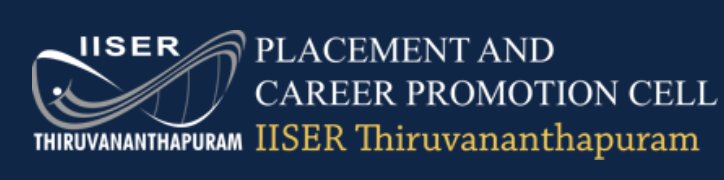
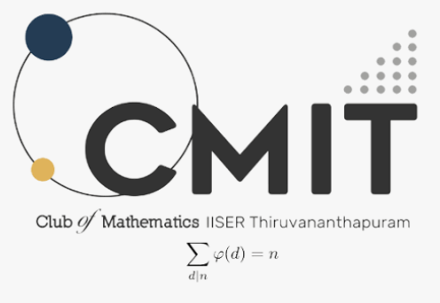
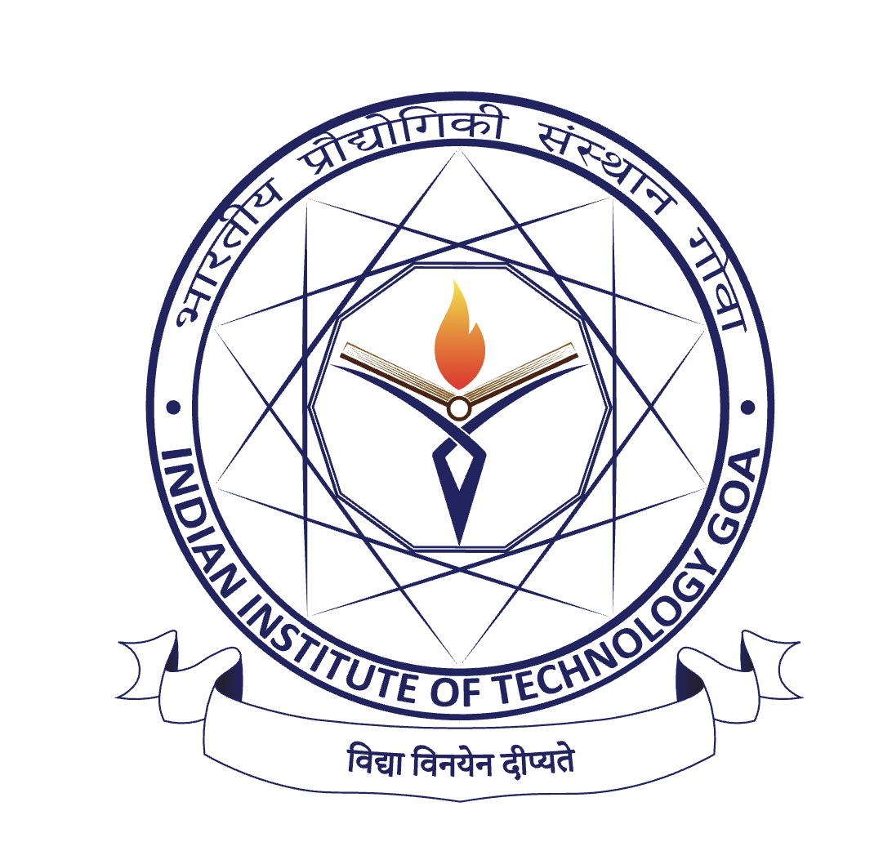
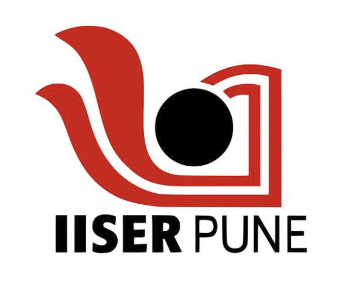

About Me
Department of Science & Technology (DST), Government of India — INSPIRE Scholar
Data Science | Bayesian Statistics | Network Science | Bioinformatics | Biostatistics
Hi, I'm Maitreya! I'm a BS-MS Data Science student at IISER Thiruvananthapuram, where I spend most of my time on Bayesian statistics, probabilistic modeling, and network science. I like building principled models for messy, high-dimensional data — especially single-cell genomics like scRNA-seq and scATAC-seq. I am also grateful to be an INSPIRE SHE Scholar! Lately I've been most excited about Bayesian inference, unsupervised feature selection, and applying probabilistic models to real-world data for better interpretability.
I've been lucky to do research internships and poster presentations at premier institutes like IIT Bombay, IIT Goa, IISER Pune, and IISER Thiruvananthapuram, working on everything from Poisson mixture models, Bayesian statistics, estimation of selected parameters and bioinformatics to network science and real-life optimization problems using data warehousing techniques.
Outside of research, I'm a Tabla artist, a footballer, math enthusiast, and a lifelong fan of Hindustani classical music. On campus I've served as a Student Placement Coordinator and spokesperson for the Music Club. Feel free to look around and reach out any time — you can find me on LinkedIn, GitHub, or over Email.
Currently working on :
Unsupervised Feature Selection for Genes
IIT Goa · Under Dr. Clint P. George
Developing unsupervised feature selection methods for gene-level data, with a focus on identifying informative biological features without relying on predefined labels.
Research paper preprint currently under writing.
Estimation of Selected Parameters for Inverse Gaussian
IISER Thiruvananthapuram · Under Dr. Md. Masihuddin
Ongoing major project focused on the inference and estimation of selected parameters of the Inverse Gaussian distribution under various diverse populations.
Ongoing Major Project
Education
BS-MS (Dual Degree), Data Science Major
IISER Thiruvananthapuram
Aug 2023 – Present
Currently pursuing a BS-MS program in Data Science, building a strong foundation in statistical modeling, machine learning algorithms, mathematics, and computational techniques.
| Semester | SGPA |
|---|---|
| Semester 1 | 8.81 |
| Semester 2 | 9.00 |
| Semester 3 | 8.87 |
| Semester 4 | 9.57 |
| Semester 5 | 9.32 |
| Semester 6 | 9.71 |
CGPA till date: 9.21
Higher Secondary Education (Science Stream)
Sir Parshurambhau College, Pune
Aug 2021 – May 2023
Secured 92.5% in MSBSHSE Board Science-Stream Exams and completed higher secondary education with a focus on Physics, Chemistry, Mathematics, Biology, PE, German, Environmental Sciences, and English literature. Secured 5th overall rank in college and 2nd rank in the science stream. Awarded the SP College Merit Scholarship, along with the INSPIRE-SHE Scholarship from the Government of India.
Matriculation (SSC)
Sevasadan English Medium School, Pune
June 2008 – March 2021
Secured 95% in Class X CBSE Board Exams.
Experience

Placement and Career Promotion Cell
IISER Thiruvananthapuram
Student Coordinator · 2024–2026
As Student Coordinator, I reached out to and brought many startups and established companies to campus for placement opportunities, bridging the gap between industry and academia. I also conducted sessions for juniors — including CV building, interview preparation, and career guidance — to help them navigate placements and secure internships.
Furthermore, I restructured the Placement Cell's organizational hierarchy and expanded its scale by approximately fivefold. Established connections with organizations including TCS, Deloitte, Macleods Pharmaceuticals, SciAstra, Tallento.ai, Skillairo, and others. On average, at least three internship or PhD opportunities were facilitated each month. Contributed to the planning and execution of placement drives and pre-placement talks. Initiated collaborations and discussions with Placement Cells at other IISERs and NISER to strengthen placement opportunities, particularly within research-oriented institutions.
KerNeL — Official Data Science Departmental Club
IISER Thiruvananthapuram
Core Coordinator & Head of Events · 2026–Present
Was selected as the primary coordinator and Head for KerNeL, the official Data Science departmental club at IISER Thiruvananthapuram, which emphasizes research-oriented aspects of Data Science alongside its applications. Currently serving as Core Coordinator and Head of Events Team, with responsibilities spanning the planning and execution of academic events and hands-on sessions, as well as coordination of merchandise and financial activities.
Learn more about KerNeL: dsciisertvm.netlify.app
Music Club
IISER Thiruvananthapuram
Spokesperson · 2025–2026
Served as spokesperson and a member of the club's decision-making committee. Organized jamming sessions, coordinated performances like ISHYA, and managed logistics for major cultural events including IICM 2025, while actively performing Tabla at campus events.

Club of Mathematics, IISER Thiruvananthapuram (CMIT)
IISER Thiruvananthapuram
Finance Head · 2023–2024
Managed merchandise financing and provided key administrative support during the Frontier Symposium in Mathematics, 2023, ensuring smooth financial operations and successful event execution.
Achievements
A selection of academic distinctions, scholarships, awards, and research recognitions.
Academic Distinctions & Awards
Selected for ResCon'26 — IIT Bombay
Selected for the ResCon'26 poster presentation competition at the Indian Institute of Technology Bombay (IIT Bombay).
INSPIRE Scholar — Department of Science & Technology, Government of India
Awarded the INSPIRE-SHE Scholarship for ranking among the top 1% of eligible students.
SP College Merit Scholarship
Secured 2nd rank in the Science Stream in the MSBSHSE Class 12 examinations at Sir Parshurambhau College.
Rangotsav Golden Art Merit Award
Received national-level recognition for artistic excellence.
English Marathon Awards
Received multiple state-level and district-level awards for English proficiency.
NPTEL German-I Course Topper
Ranked among the top 5% of learners in the NPTEL German-I course, qualifying for eligibility for the NPTEL Post-Baccalaureate Fellowship.
Poster Presentations
Research presentations and selections at academic conferences and competitions.

Indian Institute of Technology (IIT), Bombay
ResCon'26 — Poster Presentation Competition
IIT Bombay · 2026
Selected for poster presentation competition.
Research on unsupervised feature selection for single-cell RNA sequencing (scRNA-seq), featuring the proposed PLit and ReThiN methods.
Research & Projects
I enjoy building statistically rigorous methods for challenging real-world problems. My research spans Bayesian inference, probabilistic modeling, computational biology, network science, and machine learning! Explore the projects below to learn more about my work :)
Indian Institute of Science Education and Research, Thiruvananthapuram
Estimation of Selected Parameters for Inverse Gaussian
Under Dr. Md. Masihuddin · Ongoing Major Project
Ongoing major project focused on the estimation of selected parameters of the Inverse Gaussian distribution, for different types of populations.
Optimizing Institutional Food Systems via Transactional Data: A Residential University Case Study
Under Dr. Zakaria Laskar · Course Project · Apr 2026
Developed a Data Warehousing and Business Intelligence framework to analyze institutional mess expenditure data. Built an end-to-end pipeline involving data cleaning, ETL, dimensional data warehousing, OLAP-style analysis, temporal trend analysis, Benford's Law, network analysis, and frequent pattern mining to identify procurement inefficiencies, vendor dependencies, and high-risk food wastage periods.
Community Detection & Network Analysis
Under Dr. Saptarshi Bej · Dec 2024
Applied modularity-based clustering across diverse complex networks — neural pathways, protein-protein interactions, and infrastructure (road) systems — using NetworkX and graph theory. Optimized community partitioning to reveal underlying topological structure and visualized the resulting network properties.
Design and Analysis of Experiments
Under Prof. Priyanka Majumder · Dec 2025
Mastered core experimental design methodologies — RCBD, Latin Square, and factorial designs — to structure robust randomized clinical trials. Applied mathematical statistics to model trial outcomes while minimizing the impact of confounding variables, ensuring statistically rigorous and reproducible results.

Indian Institute of Technology (IIT), Goa
Unsupervised Feature Selection for scRNA-seq Data
Under Dr. Clint P. George · May 2026 – Jul 2026
Proposed two novel unsupervised feature selection methods — PLit (Poisson Length Information Test) and ReThiN (Reproducibility via Thinning) — for single-cell RNA-seq data, grounded in information-theoretic and stability-driven principles and benchmarked against state-of-the-art methods across seven public scRNA-seq datasets.

Indian Institute of Science Education and Research, Pune
Hierarchical Bayesian Poisson Mixture Models
Under Dr. Leelavati Narlikar · May 2025 – Jul 2025
Engineered a novel Bayesian clustering framework using Poisson Mixture Models for single-cell (scRNA-seq / scATAC-seq) data. Benchmarked clustering accuracy and computational efficiency, demonstrating competitive or superior performance against standard machine-learning pipelines and industry-standard tools like Seurat.
Cryptography Internship
Under Prof. Soumen Maity (HoD, Mathematics) · May 2024 – Jul 2024
Conducted an in-depth study of the algebraic foundations governing modern cryptosystems, covering symmetric algorithms (e.g., DES) and public-key infrastructure. Completed a comprehensive structured reading project analyzing various security models, theoretical vulnerabilities, and protocol robustness.
Technical Write-ups
A collection of technical write-ups on topics that I have explored in depth and enjoyed understanding from first principles. These notes are written with an emphasis on clarity, intuition, and mathematical reasoning. I have tried to explain each topic in a way that bridges formal concepts with an accessible understanding.
An Interesting Property of 6
Mathematics · Number Theory
A mathematical investigation carried out with my friend, Hrishikesh Patwardhan, into a remarkable property of the number 6. We prove that 6 is the unique number for which the sum of its proper factors is equal to their product.
Operating Systems
Computer Science · Systems
A first-principles exploration of operating system fundamentals, focusing on the internal mechanisms that enable processes, memory, files, and other system-level components to work together.
Computer Architecture and Datapath
Computer Science · Computer Architecture
A structured introduction to computer architecture and datapath concepts, explaining how hardware components interact to execute instructions and how high-level operations are translated into low-level computation.
P vs NP
Algorithms · Theory of Computation
A detailed introduction to the P vs NP problem, explained from first principles and emphasizing its connections with algorithms, computation, complexity theory, and the broader mathematical implications of the question of whether P = NP.
Let's Connect!
Whether you'd like to discuss research, data science, collaborations, or just say hello, feel free to reach out.
Curriculum Vitae
Interested in my academic background, research experience, projects, skills, and positions of responsibility? My latest CV is available here.
Portfolio
Explore my research, projects, technical write-ups, education, and other work through my portfolio.
Always happy to connect, collaborate, and learn something new.